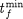
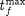

| Specification | Comments |
|---|---|
| # | Lines starting with hash (#) symbols are treated as comments |
| PROCESS {name of Process} | name of Process must correspond to the name of one of the Processes in the Project. This specification allows one to have more several Optimisation entities in a gPROMS Project all referring to the same Process: e.g. to perform different optimisation experiments on the same system. |
| OPTIMISATION_TYPE {optimisation type} |
The optimisation type can be one of the following values: POINT, STEADY_STATE and DYNAMIC Optional–If omitted, dynamic or point optimisation will be used, depending on whether or not a horizon is specified. |
| HORIZON {IV} : {LB} : {UB} |
Time horizon specification Initial guess for tf followed by  and  (cf. constraint in: Bounds on the optimisation decision variables). |
| INTERVALS {number of intervals} {IV} : {LB} : {UB} ... {IV} : {LB} : {UB} |
Intervals in control variable profiles. There follows one line per interval. Initial guess, lower bound and upper bound for the length of each interval. |
| PIECEWISE_CONSTANT {variable name} {initial profile specification} |
Specification of a piecewise-constant control variable. Its full gPROMS path name. Optional–see also: control variables and time invariant parameters. |
| PIECEWISE_LINEAR {variable name} {initial profile specification} |
Specification of a piecewise-linear control variable. Its full gPROMS path name. Optional–see also: control variables and time invariant parameters. |
| TIME_INVARIANT {variable name} {initial value specification} |
Specification of a time-invariant parameter. Its full gPROMS path name. Optional–see also: control variables and time invariant parameters. |
| ENDPOINT_EQUALITY {variable name} {value} |
Specification of a variable on which an equality end-point constraint is to be imposed. Its full gPROMS path name. The value in the constraint in: end-point constraints. |
| ENDPOINT_INEQUALITY {variable name} {LB} : {UB} |
Specification of a variable on which an inequality end-point constraint is to be imposed. Its full gPROMS path name. The values |
| INTERIORPOINT {variable name} {LB} : {UB} |
Specification of a variable on which an interior-point constraint is to be imposed. Its full gPROMS path name. The values and in the constraint in: interior-point constraints. Note: an alternate syntax for specifying varying interior-point constraints will be presented later. |
| MAXIMISE {variable name) |
or MINIMISE The objective function variable z (see objective function equation) |